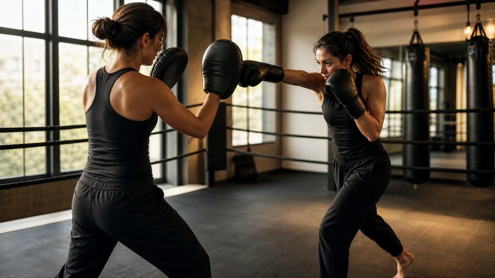
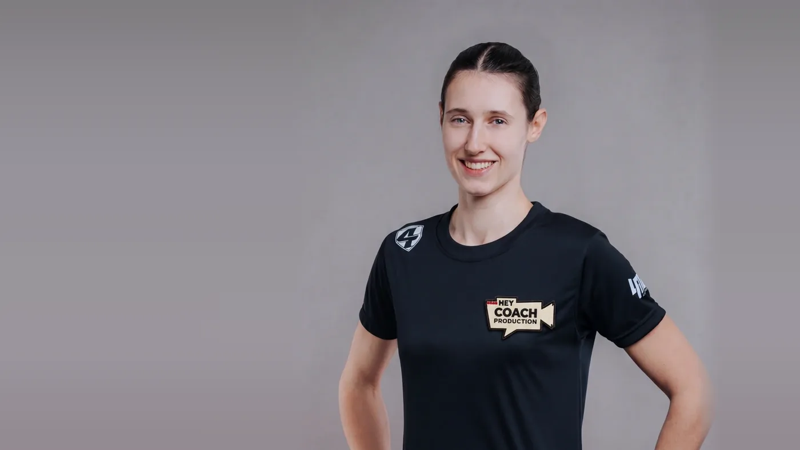

Die meisten Frauen, die zum ersten Mal in eine Kickbox-Halle kommen, haben sich längst entschieden. Was sie an der Tür noch aufhält, sind ein paar sehr konkrete Fragen. Werde ich gleich geschlagen? Muss ich sparren? Bin ich die Einzige, die keine Ahnung hat? Und bin ich überhaupt fit genug?
Auf diese Fragen gibt es ehrliche Antworten, und einige sind besser belegt, als man denkt. Wo es Studien gibt, nennen wir sie mit Quelle. Wo die Forschung dünn ist, sagen wir das. Zwei Stellen werden unbequem: die Frage, ob Kickboxen Selbstverteidigung ist, und die Frage, woran du eine gute Halle erkennst.
Wichtig vorweg: Dieser Artikel ist Trainingswissen, keine medizinische Beratung. Wenn du schwanger bist, Vorerkrankungen hast oder nach einer Verletzung einsteigen willst, klär vorher ärztlich ab, was für dich passt.
Ist Kickboxen für Frauen geeignet?
Ja, und zwar ohne Sonderregeln. Kickboxen ist eine Sportart mit Schlägen und Tritten, und die Technik ist für alle dieselbe. Unterschiede gibt es bei Größe, Reichweite, Kraft und Erfahrung. Die gibt es aber in jeder Trainingsgruppe, auch in einer, in der nur Männer stehen. Eine Anfängerin mit 1,60 Metern lernt denselben Jab wie ein Anfänger mit 1,90 Metern. Sie arbeitet nur auf einer anderen Distanz.
Ein Blick in die Forschung lohnt sich trotzdem, weil sie eine Lücke hat. Die oft zitierte Studie zu fünf Wochen Kickboxtraining von Ouergui und Kollegen (2014) hat ausschließlich Männer untersucht, ausdrücklich, um Geschlechtereffekte auszuschließen. Das ist typisch. Zu Kampfsport bei Frauen gibt es deutlich weniger Daten als zu Kampfsport bei Männern.
Für die körperliche Grundfrage hilft deshalb ein Umweg über das hochintensive Intervalltraining, kurz HIIT. Das Belastungsmuster ähnelt dem, was du in Runden am Sack oder an den Pratzen erlebst: kurze, harte Phasen, dann Pause. Eine Metaanalyse von Lock und Kollegen (2024, Sports Medicine) hat dazu 28 Studien mit 965 Teilnehmenden ausgewertet, 462 davon Frauen. Frauen steigerten ihre maximale Sauerstoffaufnahme (VO₂max) im Mittel um 11,2 Prozent, Männer um 10,9 Prozent. In der Hauptanalyse fanden die Autoren bei keinem der untersuchten Fitness- und Leistungswerte einen signifikanten Unterschied zwischen den Geschlechtern.
Dein Körper reagiert auf hartes Training also nicht anders, nur weil du eine Frau bist.
Warum trainieren Frauen Kickboxen?
Vor allem für die Fitness und als Ausgleich zum Alltag. Wettkampf und Selbstverteidigung sind deutlich seltener der Hauptgrund, als das Klischee vermuten lässt.
Konkrete Zahlen dazu liefert eine Befragung aus der Schweiz. Robbiani und Filippi (2025) haben zwischen Mai 2022 und August 2023 landesweit Menschen befragt, die Muay Thai, K-1 oder Kickboxen trainieren. 419 Antworten flossen in die Auswertung ein, 150 davon von Frauen. Gefragt wurde unter anderem nach dem wichtigsten Grund fürs Training.
Hauptgrund fürs Training: Frauen und Männer im Vergleich
Zwei Dinge fallen auf. Mehr als ein Drittel der Frauen trainiert in erster Linie als Ausgleich zum Alltag, bei den Männern ist es gut ein Fünftel. Und nur 8 Prozent der Frauen nannten Selbstverteidigung als Hauptgrund. Wer Kickboxen für Frauen automatisch als Selbstschutzthema verkauft, redet also an den meisten Frauen vorbei, die tatsächlich trainieren.
Wie viel Kontakt gibt es beim Kickboxen und ist Sparring Pflicht?
Am Anfang triffst du keinen Menschen, sondern Pratzen, Sandsack und Luft. Sparring, also freies Kämpfen mit einer Partnerin oder einem Partner, kommt in der üblichen Trainingspraxis frühestens nach einigen Monaten dazu. Ob du überhaupt sparrst, entscheidest du im Freizeitsport selbst.
Wie hart der Kontakt ist, unterscheidet sich selbst im Wettkampf. Das Regelwerk des Weltverbands WAKO kennt Disziplinen, in denen Treffer ausdrücklich kontrolliert sein müssen. Im Point Fighting zählen kontrollierte, schnelle Techniken. Light Contact beschreibt die WAKO als Zwischenstufe zwischen Point Fighting und Vollkontakt, Kick Light als Zwischenstufe auf dem Weg zum Low Kick. Erst in Full Contact, Low Kick und K1 wird mit voller Kraft gekämpft. Wie hart du getroffen wirst, hängt also davon ab, welche Stufe du wählst.
Und Verletzungen? Die Schweizer Befragung liefert auch dazu Zahlen. 52 Prozent der Frauen gaben an, sich irgendwann im Training verletzt zu haben, bei den Männern waren es 72,9 Prozent. 92,7 Prozent der Trainingsverletzungen waren Weichteilverletzungen, also etwa Prellungen oder Zerrungen. Am häufigsten betroffen waren die Beine. Der stärkste Faktor war der Trainingszweck: Wer für Wettkämpfe trainierte, hatte im Vergleich zur Fitness-Gruppe eine rund 2,6-fach höhere Chance auf eine Trainingsverletzung.
Die Einschränkung gehört dazu: Das ist eine Selbstauskunft über die gesamte bisherige Trainingszeit, keine Verletzungsrate pro Stunde. Die Richtung ist trotzdem klar. Wer zur Fitness trainiert, trägt ein deutlich kleineres Risiko als jemand, der sich auf Kämpfe vorbereitet.
Ein Detail aus derselben Studie solltest du dir merken: 44 Prozent der Frauen trugen im Training keinen Mundschutz, bei den Männern waren es 14,5 Prozent. Sobald Partnerübungen mit Kontakt dazukommen, gehört er in den Mund.
Gemischte Gruppe oder Frauengruppe: Was ist besser?
Keine der beiden Varianten ist grundsätzlich besser. Es hängt davon ab, was dich beim Einstieg mehr bremst: die Unsicherheit in einer neuen Gruppe oder zu wenig Auswahl an Trainingszeiten.
Eine Frauengruppe senkt für viele die Hemmschwelle in den ersten Wochen. Eine gemischte Gruppe bietet meistens mehr Termine und mehr verschiedene Partnerinnen und Partner. Gerade das hilft beim Lernen, denn wer immer mit derselben Größe und demselben Tempo arbeitet, lernt Distanz nur für diesen einen Fall. Für die Technik selbst ist es egal. Ein Low Kick ist in beiden Gruppen derselbe.
Wichtiger als die Gruppenform ist die Kultur der Halle. Eine Untersuchung aus Norwegen an 29 Kampfsportlerinnen (Mathisen und Kollegen, 2022) zeigt beide Seiten. Die meisten hatten angefangen, um sich gestärkt zu fühlen, und erlebten das Umfeld als offen und einschließend. Gleichzeitig berichteten 70 Prozent von sexueller Belästigung, 41 Prozent von ihnen auch im Kampfsportumfeld. Die Stichprobe ist klein. Ein Grund, beim Probetraining genau hinzusehen, ist es trotzdem.
Woran du beim Probetraining eine gute Halle erkennst:
- Sparring ist freiwillig, und das sagt man dir, bevor du fragst. Niemand sollte dich in der ersten Woche in einen Kampf stellen.
- Die Trainingsleitung teilt die Paare ein. Sie achtet auf Erfahrung, Größe und Gewicht, und du darfst jederzeit tauschen, ohne dich zu erklären.
- Es gibt Regeln, und jemand setzt sie durch. Wer zu hart arbeitet, wird gebremst, egal wie gut er ist.
- Frauen trainieren auch in den Fortgeschrittenengruppen. Daran siehst du, dass Frauen dort auch nach den ersten Monaten noch dabei sind.
Bin ich fit genug für Kickboxen?
Für den Einstieg brauchst du keine besondere Fitness, die baust du im Training erst auf. Niemand erwartet, dass du in der ersten Stunde drei Runden am Sack durchhältst.
Wie niedrig die Einstiegshürde sein kann, zeigt eine randomisierte Studie aus Taiwan (Lin und Kollegen, 2022). 100 Erwachsene zwischen 50 und 85 Jahren nahmen teil, in der Trainingsgruppe waren 76 Prozent Frauen. Beide Gruppen bekamen Vorträge und Beratung, die Trainingsgruppe zusätzlich zwölf Wochen Kickbox-Gruppentraining. Dort stiegen die Griffkraft um 5,5 Prozent und die Gehgeschwindigkeit um 5,7 Prozent. In der Kontrollgruppe sank im selben Zeitraum die Knochendichte am Oberschenkelhals um 1,45 Prozent.
Das beantwortet nebenbei eine häufige Frage, nämlich ob man mit 40 noch anfangen kann. Man kann. Wichtiger als das Alter ist, dass du am Anfang dein eigenes Tempo gehst.
Praktisch heißt das: In den ersten Wochen geht es um Technik und Atmung, nicht ums Durchhalten. Pausen zwischen zwei Runden gehören zum Training. Wenn dir schwindelig oder übel wird oder du Druck auf der Brust spürst, hörst du auf und lässt das ärztlich abklären.
Zum Umfang: In der Schweizer Befragung trainierte knapp die Hälfte der Teilnehmenden (47,5 Prozent) zwei- bis dreimal pro Woche. Für den Anfang sind zwei Einheiten pro Woche ein guter Rhythmus. So bleibt deinem Körper genug Zeit, sich an die neue Belastung zu gewöhnen.
Wie läuft deine erste Kickbox-Stunde ab?
Die erste Stunde ist in den meisten Hallen ein Techniktraining mit etwas Kondition, kein Kampf. Der Ablauf ähnelt sich fast überall:
- Ankommen und Bandagieren. Bandagen stützen Handgelenke und Mittelhand. Wie man sie wickelt, zeigt dir jemand vor Ort. Handschuhe kannst du in vielen Hallen für die ersten Male leihen, frag am besten vorher nach.
- Aufwärmen. Seilspringen, lockeres Laufen, Mobilisation von Schultern, Hüfte und Sprunggelenken. Das dauert meist zehn bis fünfzehn Minuten.
- Stand und Deckung. Wie du stehst, wo die Hände sind, wie du dich bewegst, ohne die Füße zu kreuzen. Das klingt banal, aber alles Weitere baut darauf auf.
- Erste Techniken in der Luft. Meistens Jab und Cross, also die gerade Führhand und die gerade Schlaghand, dazu ein einfacher Tritt. Erst langsam, dann flüssiger.
- Pratzenarbeit mit Partnerin oder Partner. Eine Person hält die Pratzen, die andere schlägt, dann wird gewechselt. Getroffen wird das Polster, nicht der Mensch.
- Kurzer Konditionsteil. Ein paar Runden am Sack oder Übungen mit dem eigenen Körpergewicht. Hier bestimmst du dein Tempo selbst.
- Abwärmen und Dehnen. Puls runter, Muskeln lockern. Jetzt ist auch Zeit für Fragen.

Was du mitbringst: bequeme Sportkleidung, eine Wasserflasche, ein Handtuch und ein Haargummi, falls du lange Haare hast. Schmuck legst du ab, Fingernägel sollten kurz sein, damit sie in Bandagen und Handschuhen nicht stören. Am nächsten Tag spürst du vermutlich Schultern und Waden. Das ist normaler Muskelkater und kein Zeichen, dass du zu viel gemacht hast.
Was macht Kickboxen mit deinem Körper und deinem Kopf?
Studien zeigen messbare Effekte auf Ausdauer, Kraft und Wohlbefinden. Bei Knochen und Figur ist die Datenlage dünner, als viele Werbetexte nahelegen. Die Tabelle fasst zusammen, was tatsächlich gemessen wurde.
Was Studien bei Frauen und gemischten Gruppen gemessen haben
| Studie | Wer | Was | Ergebnis |
|---|---|---|---|
| Lock et al. 2024 Metaanalyse |
965 Personen aus 28 Studien, davon 462 Frauen | Ausdauer (VO₂max) nach HIIT | Frauen +11,2 %, Männer +10,9 %; kein signifikanter Geschlechterunterschied |
| Danković et al. 2025 Metaanalyse |
304 sportlich aktive Frauen aus 15 Studien | Fitness und Körperzusammensetzung nach HIIT | VO₂max klein, aber signifikant verbessert; Körperfettanteil leicht gesunken; Gewicht und Fettmasse unverändert |
| Lin et al. 2022 randomisiert |
100 Erwachsene, 50 bis 85 Jahre, überwiegend Frauen | 12 Wochen Kickbox-Gruppentraining | Griffkraft +5,5 %, Gehgeschwindigkeit +5,7 %; Kontrollgruppe verlor 1,45 % Knochendichte am Oberschenkelhals |
| Stone et al. 2018 | 28 Frauen, 18 bis 35 Jahre | 12 Wochen Cardio-Kickboxen oder Yoga, 2 × 50 Minuten pro Woche | Knochendichte stabil, nicht gestiegen; Aufbaumarker Osteocalcin +67 % |
| Linhares et al. 2025 randomisiert |
27 Frauen, 60 bis 70 Jahre, niedrige Knochendichte | 12 Wochen Taekwondo | Körperbild bei Kondition, Fähigkeiten und Gesundheit verbessert; Bewertung des Aussehens unverändert |
| Moore et al. 2020 Metaanalyse |
14 Studien zu Kampfkünsten | Psychische Gesundheit | Kleiner positiver Effekt aufs Wohlbefinden, mittlerer auf nach innen gerichtete Beschwerden; kein Effekt auf Aggression |
| Weitlauf et al. 2000 | Frauen mit und ohne Selbstverteidigungstraining | Selbstwirksamkeit | Zutrauen in eigene Fähigkeiten und Durchsetzungsvermögen gestiegen, Feindseligkeit gesunken |
Ausdauer und Kraft
Das robusteste Ergebnis betrifft die Ausdauer. Neben der Metaanalyse von Lock und Kollegen gibt es eine zweite, die nur Frauen einschließt: Danković und Kollegen (2025) haben 15 Studien mit 304 sportlich aktiven Frauen ausgewertet, Durchschnittsalter 25 Jahre. HIIT verbesserte die VO₂max signifikant, der Effekt war allerdings klein (Hedges’ g = 0,40). Die Kickbox-Studie aus Taiwan zeigt zusätzlich, dass Kraft und Gehtempo profitieren können, auch bei Menschen über 50.
Dazu trainiert Kickboxen Dinge, die ein Laufband nicht abdeckt. Schläge kommen aus den Beinen und der Drehung des Rumpfes, Tritte verlangen Stabilität auf einem Bein. Diese Mischung lässt sich in Studien schwer messen. In der Halle sieht man sie nach ein paar Monaten trotzdem: Die meisten stehen sicherer auf einem Bein als am Anfang.
Knochen: was Kickboxen kann und was nicht
Die ehrliche Antwort ist unspektakulär. In der Studie von Stone und Kollegen (2018) trainierten 28 junge Frauen zwölf Wochen lang zweimal pro Woche Cardio-Kickboxen oder Yoga. Die Knochendichte stieg in dieser Zeit nicht, sie blieb stabil. Der Marker Osteocalcin, der den Knochenaufbau anzeigt, stieg in der Kickboxgruppe aber um 67 Prozent. Die Autoren deuten das so: Der Aufbau war angestoßen, zwölf Wochen waren nur zu kurz, um ihn in der Dichte zu sehen.
Wenn deine Knochen das eigentliche Thema sind, etwa wegen einer diagnostizierten niedrigen Knochendichte, gehört die Trainingsplanung in ärztliche Hände. Die aktuelle Leitlinie des Dachverbands Osteologie (Kemmler und Kollegen, 2026) empfiehlt Menschen mit erhöhtem Bruchrisiko für die Knochenfestigkeit Phasen mit hoher und schneller Belastung, also Sprung- und Stoßbelastungen sowie dynamisches Krafttraining, und das mindestens zweimal pro Woche. Kickboxen kann ein Baustein davon sein. Ein gezieltes Programm ersetzt es nicht.
Was macht Kickboxen mit der Figur?
Wir versprechen dir an dieser Stelle nichts, und das hat Gründe. In der Fünf-Wochen-Studie von Ouergui veränderte sich die Körperzusammensetzung nicht. In der Metaanalyse von Danković sank der Körperfettanteil leicht, Körpergewicht und Fettmasse blieben aber statistisch unverändert. Wer vor allem auf die Waage schaut, misst beim Kickboxen das Falsche.
Aufschlussreicher ist eine kleine randomisierte Studie von Linhares und Kollegen (2025). 27 Frauen zwischen 60 und 70 Jahren ohne Taekwondo-Erfahrung machten zwölf Wochen Taekwondo, ebenfalls ein Kampfsport mit Schlägen und Tritten. Danach bewerteten sie ihren Körper bei Kondition, Fähigkeiten und Gesundheit signifikant besser als vorher. An der Bewertung ihres Aussehens änderte sich nichts. Ihrem Körper trauten sie danach aber mehr zu.
Kopf und Selbstvertrauen
Hier ist die Studienlage besser, als man vermutet. Eine Metaanalyse von Moore und Kollegen (2020) hat 14 Studien zu Kampfkunsttraining und psychischer Gesundheit ausgewertet. Das Training hatte einen kleinen positiven Effekt auf das Wohlbefinden (d = 0,35) und einen mittleren auf nach innen gerichtete Beschwerden wie Ängstlichkeit und gedrückte Stimmung (d = 0,62). Auf Aggression hatte es keinen messbaren Effekt (d = 0,02). Kampfsport macht also nicht aggressiver, auch wenn sich das Vorurteil hält.
Dass das Training von Schlägen und Tritten auch das Selbstvertrauen verändern kann, zeigt eine ältere Studie zu Selbstverteidigungstraining bei Frauen (Weitlauf und Kollegen, 2000). Das Training steigerte das Zutrauen in die eigene Verteidigungsfähigkeit, in die körperlichen Fähigkeiten und die allgemeine Selbstwirksamkeit. Die Teilnehmerinnen wurden durchsetzungsfähiger, und ihre Feindseligkeit nahm eher ab als zu. Wie Bewegung bei Dauerstress wirkt, haben wir in einem eigenen Artikel aufgeschrieben: Sport gegen chronischen Stress.
Ist Kickboxen Selbstverteidigung?
Nur zum Teil. Kickboxen ist ein Sport mit Regeln, Ringrichter und Handschuhen. Ein Selbstverteidigungskurs trainiert etwas anderes: Gefahr früh erkennen, Grenzen setzen, deeskalieren und mit wenigen einfachen Techniken wegkommen.
Schon das Regelwerk zeigt den Unterschied. Im K1-Stil der WAKO sind Treffer nur an Kopf und Rumpf von vorn und von der Seite sowie an den Beinen erlaubt. Es gibt Handschuhe, Rundenzeiten und jemanden, der abbricht. Ein Übergriff im Alltag hat nichts davon.
Die Polizei unterscheidet auf ihrem Präventionsportal zwei Dinge. In Selbstbehauptungskursen geht es darum, „sich der eigenen Kraft und Stärke bewusst zu werden und selbstsicher aufzutreten“. In Kursen zur Selbstverteidigung werden „körperliche Techniken für den Ernstfall erlernt“. Als Qualitätsmerkmal eines Kurses nennt sie unter anderem, ob er darauf eingeht, dass viele Täter aus dem näheren sozialen Umfeld kommen. Gegen einen Bekannten, der nicht lockerlässt, brauchst du zuerst eine klare Grenze und keinen Low Kick.
Wie viel ein guter Kurs bewirken kann, zeigt eine große Studie aus Kanada (Senn und Kollegen, 2015, New England Journal of Medicine). 893 Studentinnen im ersten Studienjahr wurden per Los auf zwei Gruppen verteilt. Die eine bekam Broschüren, die andere ein Programm aus vier Einheiten zu je drei Stunden: Risiken durch Bekannte einschätzen, innere Hürden überwinden, eine Gefahr als solche anerkennen, sich verbal und körperlich wirksam wehren. Nach einem Jahr lag das Risiko einer vollendeten Vergewaltigung in der Programmgruppe bei 5,2 Prozent, in der Vergleichsgruppe bei 9,8 Prozent. Das entspricht einer relativen Senkung um 46,3 Prozent. Bei versuchten Vergewaltigungen lagen die Werte bei 3,4 gegenüber 9,3 Prozent.
Körperliche Gegenwehr war dabei nur einer von vier Bausteinen. Eine Untersuchung zu einem zehnwöchigen Selbstverteidigungskurs an einer US-Universität (Hollander, 2014) zeichnet ein ähnliches Bild. Die Teilnehmerinnen erlebten im Folgejahr seltener sexuelle Übergriffe und trauten sich mehr Gegenwehr zu als vergleichbare Frauen ohne Kurs.
Was heißt das für dich? Kickboxen gibt dir Dinge, die in einer Notsituation nützen: Kondition, Reaktion, die Erfahrung, unter Druck ruhig zu bleiben, und Techniken, die du oft wiederholt hast. Auf den letzten Punkt weist auch die Polizei hin: Körperliche Techniken sollten lange geübt werden, damit sie in einer bedrohlichen Situation sicher funktionieren. Was Kickboxen dir nicht beibringt, ist das Erkennen und Entschärfen einer Situation, bevor sie körperlich wird. Wenn dir Selbstschutz wichtig ist, kombinierst du am besten einen guten Selbstbehauptungs- und Selbstverteidigungskurs mit einem Sport, in dem du Techniken über Jahre trainierst. Wie sich die Kampfsportarten dafür unterscheiden, steht in unserem Artikel Kampfsportarten im Vergleich.
Welcher Kampfsport passt zu dir als Frau?
Das hängt von deinem Ziel ab. Für Fitness und Technik mit Händen und Beinen passt Kickboxen. Wenn dich der Nahkampf reizt, Muay Thai. Wer sich ganz auf die Hände konzentrieren will, ist beim Boxen richtig. Geht es dir konkret um Sicherheit im Alltag, ist ein Selbstverteidigungskurs die direktere Wahl.
Kickboxen, Muay Thai, Boxen, Selbstverteidigungskurs im Überblick
| Kickboxen | Muay Thai | Boxen | Selbstverteidigungskurs | |
|---|---|---|---|---|
| Was du lernst | Schläge und Tritte, im K-1-Stil auch Kniestöße | Schläge, Tritte, Knie, Ellbogen und Clinch | Fausttechniken, Beinarbeit, Ausweichen | Selbstbehauptung und körperliche Techniken für den Ernstfall |
| Regeln im Wettkampf | K-1 bei der ISKA (Amateure): Knie nur zu Körper und Beinen, Ellbogen verboten | Ellbogen zu Kopf und Körper erlaubt, Clinch und Feger erlaubt | Nur mit der Knöchelfläche des Handschuhs, Treten ist ein Foul | Kein Wettkampf |
| Kontakt als Anfängerin | Pratzen, Sack, Partnerübungen; Sparring später und deine Entscheidung | Wie beim Kickboxen; Clinch-Arbeit kommt nach und nach dazu | Pratzen, Sack, Partnerübungen; Sparring später | Übungen mit Partnerin oder Partner, kein Kampf |
| Brustschutz im Wettkampf | Pflicht (WAKO und ISKA) | Pflicht (ISKA) | Erlaubt, nicht vorgeschrieben (World Boxing) | Entfällt |
| Zeitrahmen | Laufendes Training über Monate und Jahre | Laufendes Training über Monate und Jahre | Laufendes Training über Monate und Jahre | Kurs mit Anfang und Ende, in den Studien oben 4 × 3 Stunden bzw. 10 Wochen |
| Passt zu dir, wenn … | du Ganzkörpertraining willst und Hände wie Beine nutzen möchtest | dich Nahdistanz und Clinch reizen | du Hände und Beinarbeit verfeinern willst | Sicherheit im Alltag dein Hauptziel ist |
Welche Ausrüstung brauchst du als Frau beim Kickboxen?
Für die ersten Stunden reichen Sportkleidung, ein gut sitzender Sport-BH und Bandagen. Handschuhe kannst du oft leihen. Speziell für Frauen gibt es zwei Punkte, die in vielen Ausrüstungslisten fehlen: der Sport-BH als echtes Ausrüstungsteil und der Brustschutz. Die komplette Liste für Einsteiger steht in unserem Artikel Kickboxen Ausrüstung für Anfänger.
Der Sport-BH gehört zur Ausrüstung
Wie viel er ausmacht, zeigt eine Befragung von 540 Spitzensportlerinnen aus 49 Sportarten in Australien (Brisbine und Kollegen, 2020). 44 Prozent hatten im Training oder Wettkampf belastungsbedingte Brustschmerzen, und nach eigener Angabe beeinträchtigte das auch ihre Leistung. In einer zweiten Untersuchung derselben Forschungsgruppe wurde bei 112 Spielerinnen aus Football- und Rugbyteams der BH direkt geprüft: 87 Prozent trugen einen Sport-BH, aber bei 52 Prozent saß er nicht richtig.
Für Kickboxen heißt das: Nimm ein Modell mit festem Halt für hohe Belastung, nicht den lockeren Yoga-BH. Das Unterbrustband trägt die Hauptlast und sollte fest sitzen, ohne beim Atmen zu drücken. Die Träger dürfen nicht einschneiden, wenn du die Arme zur Deckung hebst. Der einfachste Test im Laden: ein paar Mal auf der Stelle springen und Schläge in die Luft werfen.
Wann ist ein Brustschutz im Kampfsport Pflicht?
Im Kickbox-Wettkampf bei WAKO und ISKA, im Boxen nicht. Das WAKO-Regelwerk ist eindeutig. Brustschutz ist für alle Kämpferinnen in den Klassen ältere Kadettinnen, Juniorinnen und Seniorinnen Pflicht, und zwar in allen Disziplinen vom Point Fighting bis zum K1. Er besteht aus Hartplastik und kann aus einem Stück sein, das die ganze Brust abdeckt, oder aus zwei Schalen, die in den BH eingesetzt werden. Getragen wird er unter dem T-Shirt oder Top. Auch die ISKA schreibt bei ihren Amateurturnieren im Ringsport für alle Frauen einen Brustschutz vor.
Im Boxen ist das anders. Die Wettkampfregeln von World Boxing erlauben einen Brustschutz, schreiben ihn aber nicht vor. Wenn eine Boxerin einen trägt, muss er den Konturen der Brust folgen und darf keine Trefferfläche abdecken, auch nicht das Brustbein.
Im Freizeittraining entscheidest du selbst. Viele kennen das Teil gar nicht: In der Untersuchung an Football- und Rugbyspielerinnen nutzten nur 17 Prozent überhaupt einen Brustschutz, und der häufigste Grund dagegen war, dass die Spielerinnen nicht wussten, dass es so etwas gibt. Spätestens wenn du mit Sparring beginnst, lohnt es sich, einen auszuprobieren.
Tiefschutz, Handschuhe und Mundschutz
Ein Tiefschutz ist bei der WAKO in allen Disziplinen Pflicht, für Männer wie für Frauen. In den ISKA-Amateurregeln für den Ringsport ist er nur für Männer vorgeschrieben. Für das Training ohne Sparring brauchst du ihn nicht.
Bei Handschuhen beschreibt die Angabe in Unzen (oz) das Gewicht, nicht die Größe deiner Hand. In den Vollkontaktdisziplinen der WAKO und bei den ISKA-Amateuren sind 10 Unzen vorgeschrieben. In der Trainingspraxis gilt als grobe Faustregel: 10 bis 12 Unzen für Pratzen und Sack, 14 oder 16 Unzen fürs Sparring, weil schwerere Handschuhe dein Gegenüber besser schützen. Eine eigene Frauengröße musst du nicht kaufen. Wichtig ist, dass sich die Faust im Handschuh schließen lässt und der Verschluss das Handgelenk fest umschließt.
Beim Mundschutz reicht für den Anfang ein Modell zum Selbstanpassen aus dem Sportgeschäft. Denk an die Zahl aus der Schweizer Befragung: 44 Prozent der Frauen trainierten ohne. Bei der Kleidung zählt, dass sie bequem ist und nicht rutscht: Kickbox-Shorts oder Leggings, dazu ein T-Shirt oder Top. In vielen Hallen trainierst du barfuß.
Kickboxen während der Periode: Musst du dein Training an den Zyklus anpassen?
Nein. Trainieren kannst du auch während der Periode, wenn du dich danach fühlst, und eine allgemeine Regel für die Zyklusphasen gibt die Forschung nicht her. Sinnvoll ist, dein eigenes Muster zu beobachten und die Intensität danach zu richten.
Eine große Auswertung stammt von McNulty und Kollegen (2020, Sports Medicine) und umfasst 78 Studien. In der frühen Follikelphase, also in den Tagen der Periode, war die Leistung im Schnitt höchstens geringfügig schlechter als in anderen Phasen. Weil der Effekt so klein war, die Studien stark streuten und ihre Qualität überwiegend niedrig war, halten die Autoren allgemeine Empfehlungen für nicht möglich. Sie raten, sich an der eigenen Reaktion zu orientieren. Für die Pille kam eine zweite Metaanalyse derselben Forschungsgruppe mit 42 Studien zu einem ähnlichen Schluss: wenn überhaupt, ein trivialer Effekt.
Was im Alltag mehr zählt als die Phase, sind die Beschwerden. In einer Befragung von 6.812 sporttreibenden Frauen ohne kombinierte hormonelle Verhütung, davon 839 aus Deutschland, nannten 90,6 Prozent Stimmungsschwankungen oder Ängstlichkeit, 86,2 Prozent Müdigkeit, 84,2 Prozent Unterleibskrämpfe und 83,1 Prozent Brustschmerzen oder ein Spannungsgefühl als Zyklussymptome (Bruinvels und Kollegen, 2021). Je mehr Symptome, desto häufiger ließen die Frauen Training ausfallen oder änderten es. Mehrere Autorinnen und Autoren dieser Studie arbeiten für einen Anbieter einer Zyklus-App oder beraten ihn. Auch das gehört zur Einordnung.
Für dein Training bedeutet das: An Tagen mit starken Beschwerden ist eine ruhigere Technikeinheit eine gute Wahl, an anderen Tagen trainierst du ganz normal. Der Sport-BH mit festem Halt hilft auch hier, wenn die Brust empfindlich ist. Sehr starke Schmerzen, sehr unregelmäßige oder ausbleibende Blutungen gehören ärztlich abgeklärt, ebenso jede Frage zum Training in der Schwangerschaft.
Warum helfen Vorbilder beim Einstieg?
Weil du eine Technik schneller verstehst, wenn du sie an jemandem siehst, der ähnlich gebaut ist wie du. Das gilt für Reichweite, Größe und Körpergewicht mehr als fürs Geschlecht.

Jana ist ISKA-Weltmeisterin im Kickboxen und eine unserer Trainerinnen. Sie hat Fitnessökonomie studiert (Bachelor) und tritt selbst noch aktiv im Wettkampf an. Für Einsteigerinnen hilft es, eine Technik in mehreren Varianten für unterschiedliche Körpertypen zu sehen. Dann wird klar, dass sie an verschiedenen Körpern verschieden aussehen darf und trotzdem sauber ist.
Was sehen wir beim Einstieg in der Halle immer wieder?
Vier Beobachtungen, die wir in der Halle immer wieder machen, wenn Neue anfangen. Es sind Erfahrungswerte, keine Studienergebnisse:
- Die schwierigste Stunde ist oft die dritte. Die erste trägt die Neugier. Wer drei Termine geschafft hat, kommt meistens wieder.
- Wer zu zweit kommt, bleibt eher dabei. Eine Freundin oder ein Kollege, mit dem man den Termin ausmacht, hilft oft mehr als jeder Motivationstrick.
- Locker schlagen zahlt sich am Anfang aus. Kraft kommt aus sauberer Technik. Wer von Beginn an alles hineinlegt, lernt die Bewegung schlechter und tut sich öfter am Handgelenk weh.
- Größe ist an den Pratzen egal, im Sparring nicht. Darauf muss die Trainingsleitung bei der Partnerwahl achten. Das ist nicht deine Aufgabe.
Das Wichtigste in vier Sätzen
Kickboxen ist für Frauen ohne Sonderprogramm geeignet, und Studien zeigen, dass Frauen sich durch intensives Training genauso verbessern wie Männer. Am Anfang triffst du nur Pratzen und Sack, Sparring kommt später und ist deine Entscheidung, und wer zur Fitness trainiert, verletzt sich deutlich seltener als jemand, der für Wettkämpfe trainiert. Ein gut sitzender Sport-BH gehört von der ersten Stunde an zur Ausrüstung, ein Brustschutz spätestens ab dem Sparring, und im Wettkampf ist er Pflicht. Kickboxen ist ein starker Sport, aber kein Selbstverteidigungskurs, und wenn dir Sicherheit im Alltag wichtig ist, kombinierst du am besten beides.